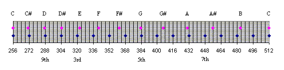

Mutations | Home |
The word mutation refers to any single-rank stop that sounds at a pitch other than unison or octaves.
The following table shows the relationship between harmonics and mutations. Stop pitches are shown for four different harmonic series. Note that unison and octave sounding pitches are not considered mutations. Independent stops are rarely seen higher than 1' pitch, and pipes are usually not made much smaller than 1/24' (1/2"), the top of a 61-note 1-1/3' rank. For completeness, stop-pitches are shown for all of the first 32 harmonics, even though some of them have never been used.
| Harm- onic # | Step/ Name | Nearest Note | Pitches | Selected Names | ||||
|---|---|---|---|---|---|---|---|---|
| 1 | unison | C | 64' | 32' | 16' | 8' | 4' | |
| 2 | octave | C | 32' | 16' | 8' | 4' | 2' | |
| 3 | 12th | G | 21-1/3' | 10-2/3' | 5-1/3' | 2-2/3' | 1-1/3' | Nasard, Nasat |
| 4 | 15th | C | 16' | 8' | 4' | 2' | 1' | |
| 5 | 17th | E | 12 4/5' | 6-2/5' | 3-1/5' | 1-3/5' | 4/5' | Tierce, Terz |
| 6 | 19th | G | 10-2/3' | 5-1/3' | 2-2/3' | 1-1/3' | 2/3' | Larigot |
| 7 | 21st, b | Bb | 9 1/7' | 4-4/7' | 2-2/7' | 1-1/7' | 4/7' | Septiéme |
| 8 | 22nd | C | 8' | 4' | 2' | 1' | 1/2' | |
| 9 | 23rd | D | 7 1/9' | 3 5/9' | 1 7/9' | 8/9' | 4/9' | None |
| 10 | 24th | E | 6-2/5' | 3-1/5' | 1-3/5' | 4/5' | 2/5' | |
| 11 | 25th | F | 5 9/11' | 2 10/11' | 1 5/11' | 8/11' | 4/11' | rare |
| 12 | 26th | G | 5-1/3' | 2-2/3' | 1-1/3' | 2/3' | 1/3' | |
| 13 | 27th | A | 4 12/13' | 2 6/13' | 1 3/13' | 8/13' | 4/13' | Tredezime |
| 14 | 28th, b | Bb | 4-4/7' | 2-2/7' | 1-1/7' | 4/7' | 2/7' | uncommon |
| 15 | 28th | B | 4 4/15' | 2 2/15' | 1 1/15' | 8/15' | 4/15' | |
| 16 | 29th | C | 4' | 2' | 1' | 1/2' | 1/4' | |
| 17 | Db | 3 13/17' | 1 15/17' | 16/17' | 8/17' | 4/17' | (see Mollterz) | |
| 18 | 30th | D | 3 5/9' | 1 7/9' | 8/9' | 4/9' | 2/9' | |
| 19 | Eb | 3 7/19' | 1 13/19' | 16/19' | 8/19' | 4/19' | Mollterz (rare) | |
| 20 | 31st | E | 3-1/5' | 1-3/5' | 4/5' | 2/5' | 1/5' | |
| 21 | 3 1/21' | 1 11/21' | 16/21' | 8/21' | 4/21' | (see Mollterz) | ||
| 22 | 32nd | F | 2 10/11' | 1 5/11' | 8/11' | 4/11' | 2/11' | |
| 23 | F# | 2 18/23' | 1 9/23' | 16/23' | 8/23' | 4/23' | ||
| 24 | 33rd | G | 2-2/3' | 1-1/3' | 2/3' | 1/3' | 1/6' | |
| 25 | G# | 2 14/25' | 1 7/25' | 16/25' | 8/25' | 4/25' | ||
| 26 | 34th | A | 2 6/13' | 1 3/13' | 8/13' | 4/13' | 2/13' | |
| 27 | 2 10/27' | 1 5/27' | 16/27' | 8/27' | 4/27' | |||
| 28 | 35th, b | Bb | 2-2/7' | 1-1/7' | 4/7' | 2/7' | 1/7' | |
| 29 | 2 6/29' | 1 3/29' | 16/29' | 8/29' | 4/29' | |||
| 30 | 35th | B | 2 2/15' | 1 1/15' | 8/15' | 4/15' | 2/15' | |
| 31 | 2 2/31' | 1 1/31' | 16/31' | 8/31' | 4/31' | |||
| 32 | 36th | C | 2' | 1' | 1/2' | 1/4' | 1/8' | |
| 48 | 40th | G | 1-1/3' | 2/3' | 1/3' | 1/6' | 1/12' | Quadragesima |
| 64 | 43rd | C | 1' | 1/2' | 1/4' | 1/8' | 1/16' | |
You can determine frequencies from a base frequency by using the harmonic number as a multiplier. For example, starting with 256hz for middle C, the C above that will be 2 x 256 = 512hz, the G above that will be 3 x 256 = 768hz, etc. Note that these calculations will, except for octaves, produce different results than using the 12th root of 2 as a multiplier, which is used for determining frequencies in the equally-tempered scale. The graph below compares the frequencies of harmonics 16 through 32 with the frequencies of the nearest notes in the equally tempered scale, based on C = 16hz.
All mutation stops contained in this Encyclopedia are listed below.
See also Mixture.
|
Original site compiled by Edward L. Stauff. For educational use only. Introduction.html - Last updated 4 February 2002. | Home |